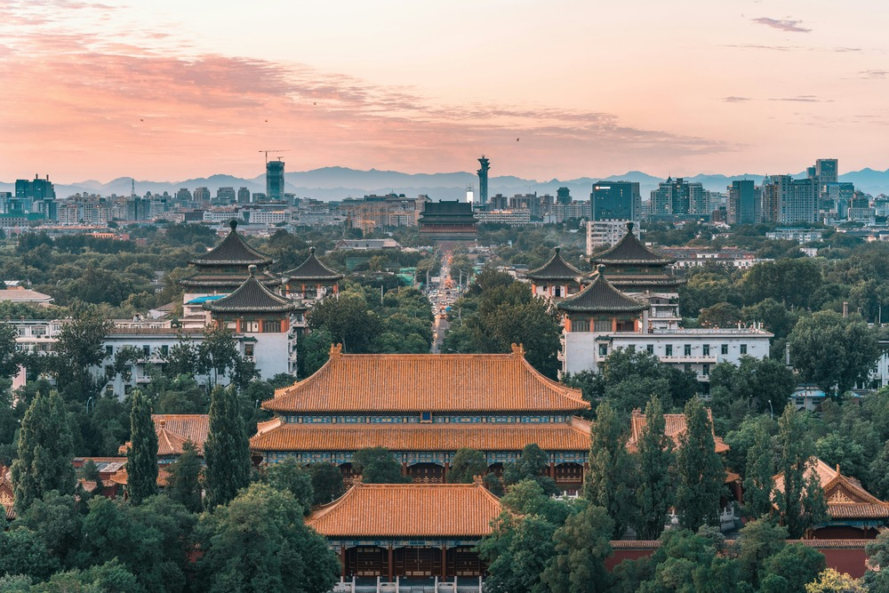
Dónde ir
Descubre algunos de los lugares más impresionantes de China, desde ciudades modernas hasta templos antiguos y paisajes naturales únicos.
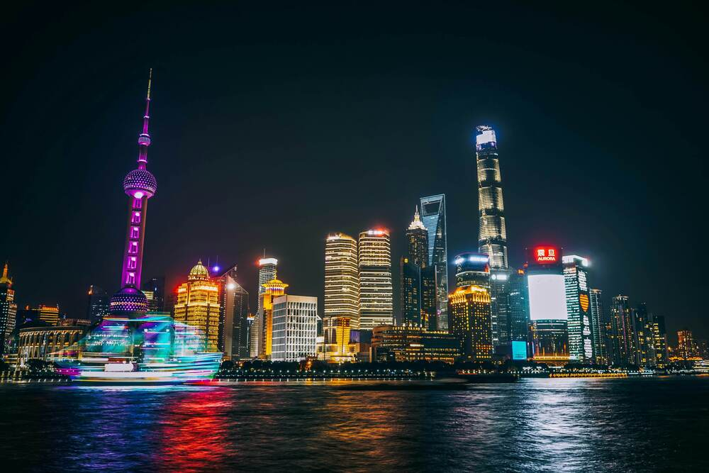
Ciudades

Sitios históricos y patrimonio antiguo
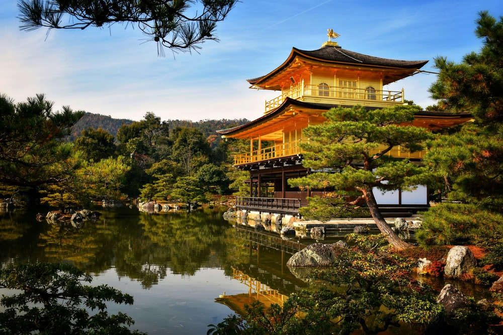
Templos y espacios espirituales
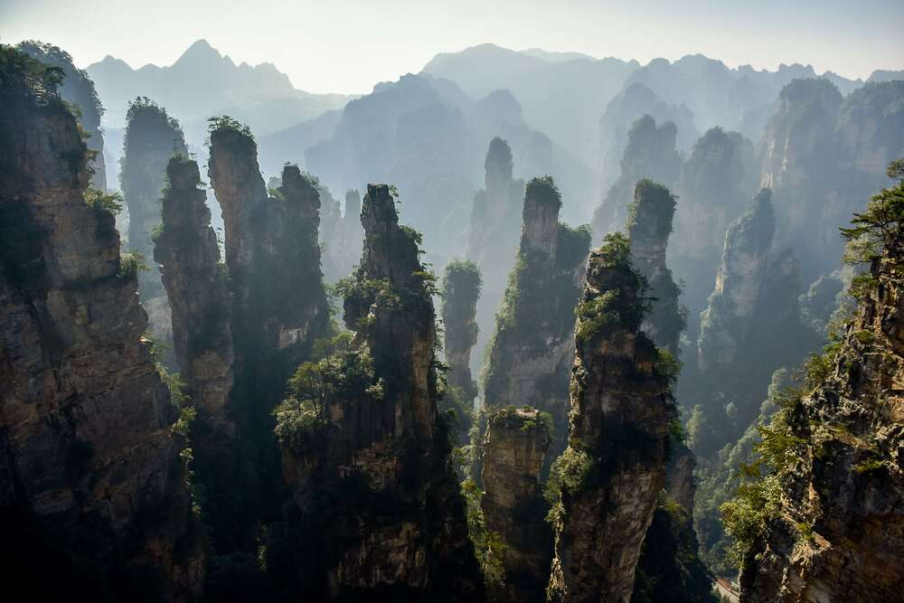
Paisajes naturales y montañas escénicas
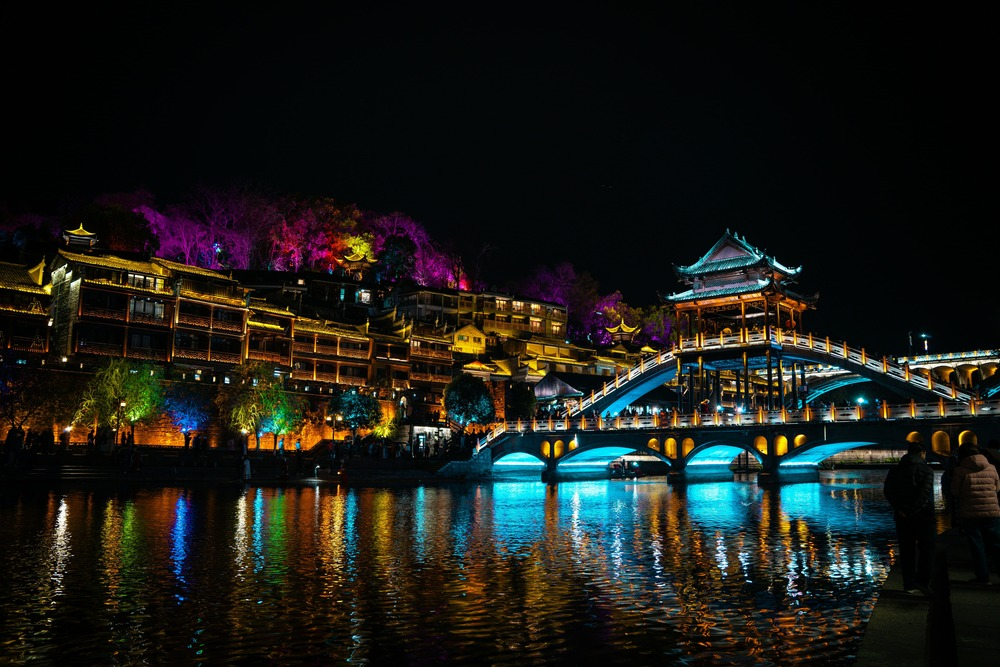
Pueblos tradicionales y cultura ancestral
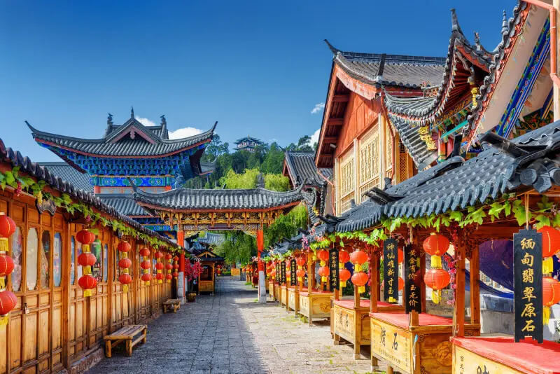
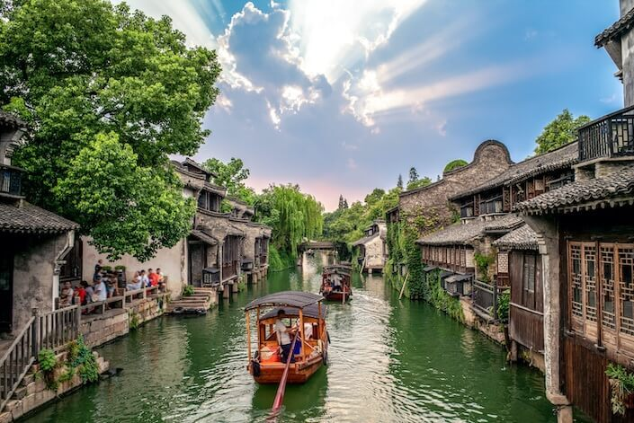

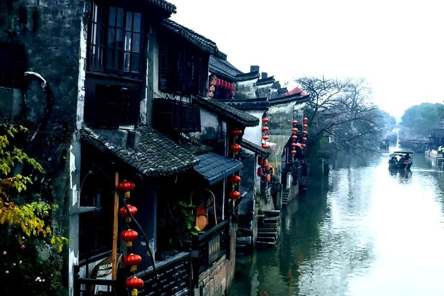
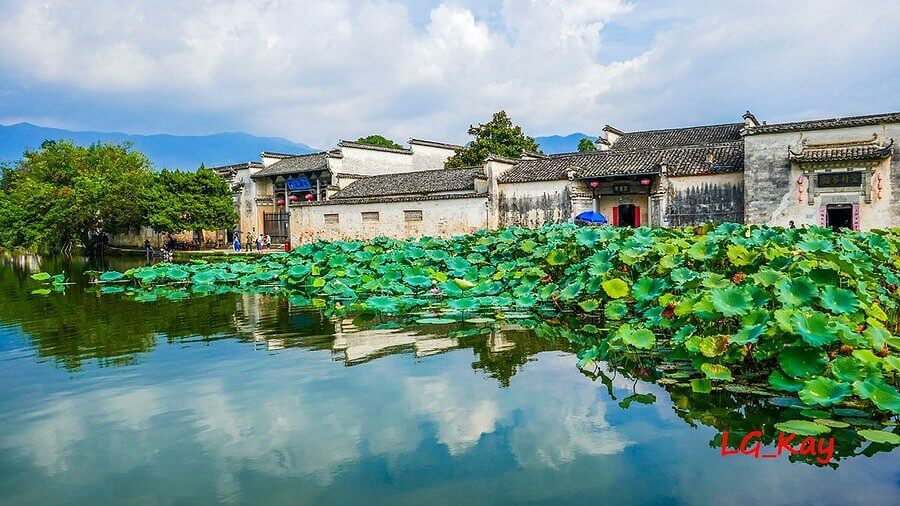
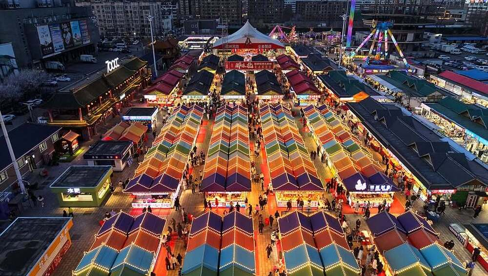
Sabores, compras y tradición
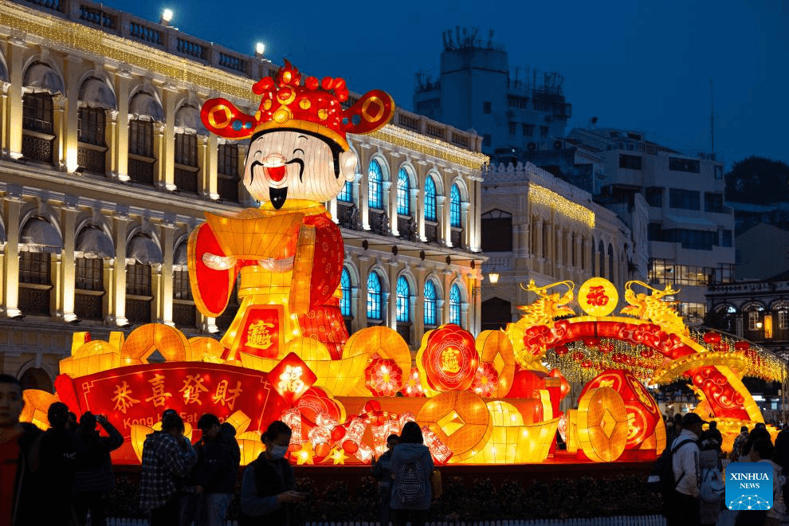